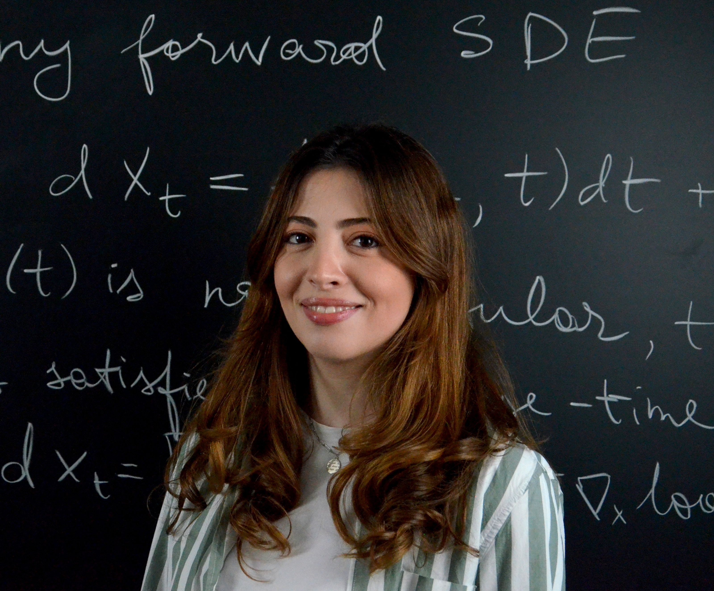

Elen Vardanyan
PhD Student in Statistics · CREST, ENSAE Paris
I am a PhD student, supervised by Prof. Arnak Dalalyan, working on convergence properties of diffusion models under structural assumptions.
My research interests are Machine learning theory, Statistics, Generative modeling (Diffusion models, Flow matching), and optimization.
This website contains a short overview of my research, publications, teaching, and academic profile.
Publications
- Assessing the Quality of Denoising Diffusion Models in Wasserstein Distance: Noisy Score and Optimal Bounds Arsenyan, Vahan & Vardanyan, Elen & Dalalyan, Arnak. 39th Conference on Neural Information Processing Systems (NeurIPS 2025). Link
- Guaranteed Optimal Generative Modeling with Maximum Deviation from the Empirical Distribution Vardanyan, Elen & Minasyan, Arshak & Hunanyan, Sona & Galstyan, Tigran & Dalalyan, Arnak. Proceedings of the 41 st International Conference on Machine Learning (ICML). PMLR 235, 2024. Link
- Domain Reconstruction for UWB Car Key Localization Using Generative Adversarial Networks Kuvshinov, Aleksei & Knobloch, Daniel & Külzer, Daniel & Vardanyan, Elen & Günnemann, Stephan. Proceedings of the AAAI Conference on Artificial Intelligence. 36. 12552-12558. 10.1609/aaai.v36i11.21526. 2022. Link
Teaching
- Statistics 1 / Advanced Machine Learning / Theoretical Foundations of Machine Learning Teaching Assistant · ENSAE Paris · 2024-2025
- Machine Learning / Deep Learning Adjunct Lecturer · American University of Armenia (AUA) · 2022-2024
- Intro to Data Science / Machine Learning 2 Adjunct Lecturer · Yerevan State University (YSU) · 2022-2024
- Optimization Teaching Associate · American University of Armenia (AUA) · 2019